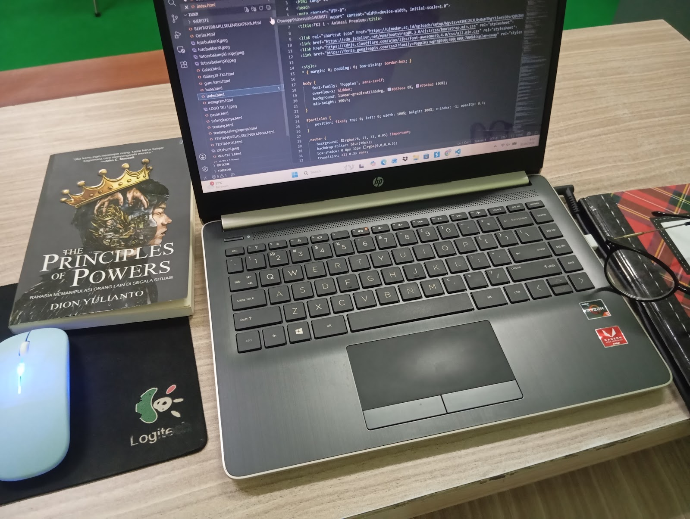

SMK IMELDA MEDAN merupakan salah satu Lembaga Pendidikan Menengah Kejuruan di Kota medan, Jawa Barat yang menyelenggarakan Program Pendidikan Kejuruan 3 Tahun, yang pembangunan fisiknya dimulai sejak tahun 1969 , di atas tanah seluas 3,4 Ha, dan telah menerima siswa sejak tahun 1974 dengan nama STM Negeri Pembangunan Bandung, yang diresmikan pada tanggal 24 Maret 1977.
Secara geografis SMK Negeri 1 Cimahi terletak di kawasan Industri, yang dapat dijangkau dari berbagai sudut kota Cimahi, baik dari atau ke Kota Bandung, Kabupaten Bandung dan Jakarta dengan mudah, serta dapat dengan mudah diakses oleh industri-industri yang berada di kawasan industri di Jalur Pantura Provinsi Jawa Barat. Sehingga akses yang dapat dilakukan untuk kepentingan akademik baik pembelajaran di sekolah maupun di luar sekolah (Dunia Usaha / Dunia Industri ) dapat dilakukan dengan baik.
Berdirinya Yayasan Imelda diawali dengan berdirinya Klinik Bersalin Imelda pada tahun 1979. Pendiri dari Klinik Bersalin Imelda ini adalah Ibu dr Rosa Dalima dan Bapak dr.H.R. Ritonga, M.Sc., yang sangat berkeinginan untuk memberikan pelayanan kesehatan bagi masyarakat yang membutuhkan. Klinik bersalin yang kecil ini kemudian berubah menjadi sebuah gedung di Jalan Bilal No. 103 A, sekarang berubah menjadi Nomor 24
Perlu dijelaskan pada sejarah ini bahwa nama Imelda adalah nama anak kedua dari pasangan pendiri Yayasan Imelda, pendiri yayasan tersebut menyatakan cita-cita anaknya ingin menjadi seorang dokter. Saat ini Rumah Sakit Imelda telah pula berkembang pesat. Pada tahun 2004 Rumah Sakit Imelda mendapat kesempatan dari Departemen Tenaga Kerja untuk menjadi rumah sakit pekerja sehingga Rumah Sakit Imelda ini berubah namanya menjadi Rumah Sakit Imelda Pekerja Indonesia (RSU.IPI).
Potensi Unggulan
Potensi unggulan yang ada di SMK IMELDA MEDAN diantaranya adalah
- Siswa : : Nilai masuk siswa yang cukup tinggi merupakan potensi yang lebih mudah dalam mengembangan karena kemampuan yang dimiliki siswa dapat dengan mudah digunakan dalam penyerapan pengetahuan dan keterampilan yang harus mereka terima di sekolah.
- program Keahlian : : rogram Keahlian yang ada di SMK Negeri 1 Cimahi ini hampir semuanya merupakan satu-satunya program keahlian yang ada di Indonesia, kecuali untuk program ICT ada untuk yang 3 tahun tapi untuk yang 4 tahun di sekolah ini merupakan satu-satunya. Semua program keahlian perintisnya dari SMK Negeri 1 Cimahi. Hal ini merupakan suatu potensi unggulan karena dengan mudah siswa yang lulus terserap oleh industri hal ini telah berlangsung sejak berdirinya STM Pembangunan Bandung yang sekarang menjadi SMK Negeri 1 Cimahi.
- Kegiatan Pelatihan : : Adanya berbagai kegiatan pelatihan dari luar yang sering dilakukan di sekolah ini memudahkan sekolah berhubungan dengan dunia usaha dan dunia industri juga dalam mengadopsi kemajuan teknologi yang saat ini berkembang dengan pesat.
- English Testing Centre : : Sebagai pusat pelaksanaan Test TOEIC (Test Of English for International Communication) SMK Negeri 1 Cimahi merupakan pusat dalam kegiatan pembelajaran Bahasa Inggris untuk daerah Bandung dan Cimahi.
- Kegiatan Ekstra Kurikuler : : Berbagai jenis kegiatan ekstra kurikuler yang dilaksanakan disekolah ini telah menghasilkan beberapa prestasi baik ditingkat regional maupun di Tingkat nasional.
Berikut secara singkat selayang pandang sejarah SMK IMELDA MEDAN

Daftar Siswa TKJ 1
| No | Nama | NISN | Jabatan |
|---|---|---|---|
| 1 | Adzra Marpung | 1234567890 | Anggota Kelas |
| 2 | Aidil Panusunan Siregar | 1234567890 | Anggota Kelas |
| 3 | Airil Efendi | 1234567890 | Anggota Kelas |
| 4 | Anda mayasyah | 1234567891 | Anggota Kelas |
| 5 | Angel Airin | 1234567892 | wakil sekretaris |
| 6 | Aqbil rapael Harahap | 1234567893 | Anggota Kelas |
| 7 | Alif Ananda Juan | 1234567894 | Anggota Kelas |
| 8 | Aliya Sofiah raisyah | 1234567895 | Anggota Kelas |
| 9 | Cinta manisyah Kwirala | 1234567896 | Anggota Kelas |
| 10 | Dede firansyah | 1234567897 | Anggota Kelas |
| 11 | Defi Efnisyah Bunga Hasibua | 1234567897 | Bendahara |
| 12 | Fenny Anggraini | 1234567897 | Anggota Kelas |
| 13 | FRANS ADITYA | 1234567897 | Anggota Kelas |
| 14 | HANAFI ISMAN LABALNI | 1234567897 | Anggota Kelas |
| 15 | HANZALAH EL ZIBRIL SHIDDIQ | 1234567897 | Anggota Kelas |
| 16 | IKHSAN KHAIRIL | 1234567897 | Anggota Kelas |
| 17 | INGKY ALDEWA | 1234567897 | Wakil Ketua Kelas |
| 18 | INTAN CHAIRIZA | 1234567897 | Sekretaris |
| 19 | JOSSI PRASETYO | 1234567897 | Anggota Kelas |
| 20 | KAYLA NAFASYA | 1234567897 | Anggota Kelas |
| 21 | KEYZIA AULIA RAHMAN | 1234567897 | Anggota Kelas |
| 22 | M. FAUZAN ZAMZAMI | 1234567897 | Anggota Kelas |
| 23 | M. RIFQY AL GHIFARI | 1234567897 | Anggota Kelas |
| 24 | MUHYI AL RASYID LUBIS | 1234567897 | Anggota Kelas |
| 25 | NABILA SYAIDINA ALIF | 1234567897 | Anggota Kelas |
| 26 | NUR SAHARA | 1234567897 | Anggota Kelas |
| 27 | PANJI ARYA SANDEWA | 1234567897 | Anggota Kelas |
| 28 | RAFFI TRI SANDI | 1234567897 | Anggota Kelas |
| 29 | RAYHAN AL FARABI SIREGAR | 1234567897 | Anggota Kelas |
| 30 | REHAN SAPUTRA | 1234567897 | Anggota Kelas |
| 31 | RINI DANIA PUTRI | 1234567897 | Anggota Kelas |
| 32 | RISKA AMELIA PUCKI | 1234567897 | Anggota Kelas |
| 33 | RIZKY ADITYA PRATAMA | 1234567897 | Anggota Kelas |
| 34 | TRYTIAN VARIYANSYAH | 1234567897 | Ketua Kelas |
| 35 | ZAIDAN ALIF | 1234567897 | Anggota Kelas |
| 36 | ALYA SALFANI | 1234567897 | Anggota Kelas |
| 37 | BAGUS PRIBADI ANANDA | 1234567897 | Anggota Kelas |
| 38 | DIMAS SETIAWAN | 1234567897 | Anggota Kelas |
| 39 | NINDI AULIA | 1234567897 | Anggota Kelas |